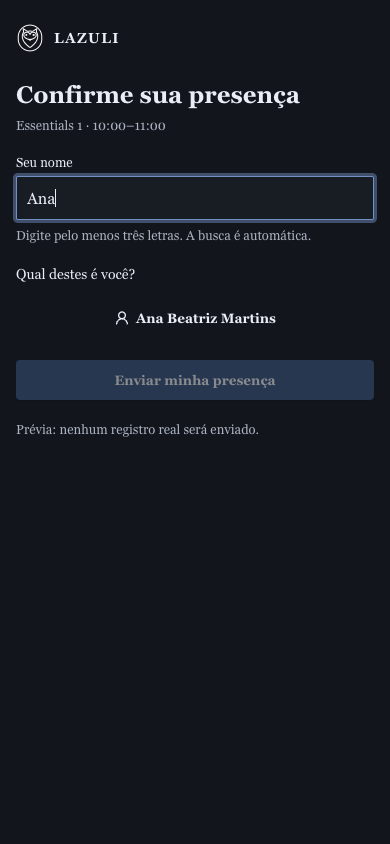

- 54
- entradas com resultado ou lacuna registrada
- 9
- rotas públicas vistas em duas larguras
- 5
- padrões parametrizados sem endereço observado
Achados
Auditoria visual de staging. A sessão e a revisão auditadas constam no manifesto. A matriz registra quais estados foram vistos, em que largura e com qual perfil. Das 54 rotas do inventário, 42 têm URL diretamente navegável. Sem sessão, 9 abriram na própria URL e foram capturadas nas duas larguras, 33 redirecionaram ao login e 12 dependem de identificadores encontrados em sessão autenticada. A exploração autenticada continuou nos contextos Administração e Professor da mesma conta.
Ordem sugerida para o refactor
| Ordem | Mudança | Quando considerar resolvida |
|---|---|---|
| 1 | Recuperação do cadastro sem token no estreito | O erro aparece junto da ação e “Solicitar novo link” recebe o primeiro toque a 390 × 844 |
| 2 | Cabeçalhos, abas e tabelas operacionais | Aluno, turma e professor compartilham a escala de título e abas. As últimas abas são descobríveis e Recebíveis, Turmas e Alunos expõem as informações essenciais antes da rolagem horizontal |
| 3 | Entradas para agenda e registro docente | Atendimento e Planejamento chegam ao recorte combinado para cada tarefa. O evento docente abre chamada com contexto preservado. Aluno, turma e período continuam identificáveis ao voltar |
| 4 | Estados de acesso, prévia e rotas indisponíveis | A prévia dá retorno coerente ao escolher um nome fictício. A entrada sem QR indica primeiro como obtê-lo. Workshop oferece a página esperada ou uma saída em português |
Acesso público · login e recuperação
O login e a recuperação compartilham a marca no canto superior, a mensagem editorial e um painel marinho com os controles. Em 1440 × 900, a fotografia ocupa o fundo, com uma camada escura que mantém legíveis o título branco e o texto inferior. O painel tem 420 px de largura com os controles alinhados no mesmo eixo de 356 px. O título editorial mede aproximadamente 80 px, o título do painel mede 44 px e a interface usa texto sem serifa. Os rótulos medem 16 px, o conteúdo dos campos 13,5 px e o CTA principal tem altura de 48 px. O preenchimento do botão Entrar, o contorno da entrada por link e o tratamento textual de Cadastrar senha distinguem as três opções. No formulário de recuperação, a mesma estrutura reduz a escolha a solicitar o link ou voltar. Login desktop · Recuperação desktop


Em 390 × 844 a marca diminui, o painel vira uma coluna de 358 px e os campos ficam com 44 px de altura e texto de 16 px. O CTA mantém 48 px e não há overflow horizontal no login. As capturas mostraram o fundo marinho na chegada e a fotografia recortada verticalmente após carregar. Os controles conservaram a posição nas duas capturas. Login estreito inicial · login estreito com fundo carregado


A posição do formulário muda muito entre estados da mesma tarefa no estreito. Após “Esqueci minha senha”, o início do painel desce de cerca de y=309 para y=500 e o campo Email institucional de y=436 para y=651. A marca continua no topo e a área vazia acima da mensagem cresce enquanto o formulário encurta. A recuperação mantém o campo em foco e o CTA no primeiro viewport medido. Para o refactor, comparar os modos em sequência a 390 × 844 e reservar um início estável para o bloco de acesso. Validar a distância entre títulos de estado e primeiro campo ao alternar os modos, com meta de deslocamento de até uma linha de corpo no início do painel. Login estreito · Recuperação estreita

Os modos de recuperação, link de acesso e solicitação de senha reutilizam rótulo, campo, CTA e retorno. No estreito, os três concentram Email institucional em y≈652 e o CTA em y≈708. A solicitação de senha tem uma linha extra de instruções e seu título fica 25 px acima dos outros modos. Essa variação de conteúdo é compatível com a etapa explicada. O ponto de referência perdido ao voltar para o formulário de senha continua sendo a mudança mais perceptível de posição. Recuperação · link de acesso · solicitação de senha


O aviso de link inválido encobre a recuperação no estreito. Em /cadastrar-senha sem token, o CTA “Solicitar novo link” ocupa os y≈768–808 e o aviso aparece sobre essa faixa. O Orca confirmou que o clique atingiria a camada do aviso. O desktop mantém CTA e aviso em áreas independentes. No estreito, após o aviso desaparecer, o CTA levou à solicitação de senha em /login. O painel diz “Escolha uma senha”, embora ofereça somente o pedido de novo link nesse estado. Priorizar mensagem junto ao CTA explicando por que ele é necessário, e validar que o botão recebe o primeiro toque com o aviso presente a 390 × 844. O aviso de validação do login também cobre a ação inferior no estreito, embora deixe os campos e o botão Entrar utilizáveis. Validar que o motivo de cada erro permaneça legível junto ao campo depois que a notificação some. Cadastro estreito · retorno após o aviso · cadastro desktop · login com erro estreito


A 403 preserva marinho, dourado e azul do CTA e usa um título sem serifa de 86,4 px no desktop e 48 px no estreito. A ilustração de bloqueio acompanha a mensagem no desktop e sai do estreito. A ação permanece no primeiro viewport. Ao voltar, o visitante chega a /login. A distinção visual é coerente com uma página de interrupção cujo objetivo é orientar o retorno. Vale manter essa leitura de uma ação por estado nas recuperações de login, com o mesmo vínculo direto entre erro e saída. 403 desktop · 403 estreito


Ao carregar o login, Email institucional recebe o foco. Tab segue para Esqueci minha senha, Senha, Mostrar senha, Entrar, Entrar por link no email e Cadastrar senha. A ordem é a mesma nos dois viewports. O desvio para recuperação antes do campo de senha acompanha a posição desse botão na tela. Se a próxima etapa reduzir interrupções para quem entra com senha, comparar o percurso de teclado com uma recuperação posicionada após o par email e senha. Ordens de foco
Presença · confirmação no celular e projeção em sala
A confirmação e sua prévia mantêm marca monocromática pequena, título serifado de 24 px e alinhamento superior à esquerda em 390 px. A confirmação aberta sem QR apresenta uma caixa azul de orientação. A prévia usa a mesma entrada, com turma/horário, campo de 44 px e CTA de 40 px. A projeção atende à leitura em sala com título centralizado, QR de 320 × 320 e instrução para apontar a câmera. O QR fictício decodificado a partir da captura leva a /presenca/previa na própria origem de staging. A projeção aberta sem link tem título maior, caixa de orientação e a marca escrita. Todos os quatro estados permaneceram dentro do viewport em 390 px. Confirmação · prévia · QR de prévia · projeção sem link


Na prévia, duas letras mantêm a instrução. Com três letras, a busca fictícia mostra um resultado ou uma mensagem abaixo do campo, encaminhando para conferência com o professor quando não há correspondência. A instrução de três letras é colocada no ponto da decisão, ao lado do campo. A projeção usa a câmera como primeiro passo, enquanto a confirmação usa a identificação e uma única ação. Essa diferença atende aos contextos de tela distante e celular. Abaixo do mínimo · sem resultado · com resultado


Clicar em um nome na prévia não produz seleção visível. No desktop, as capturas antes e depois do clique são idênticas. No estreito, o campo perdeu o realce de foco. O resultado permaneceu sem indicação de seleção e “Enviar minha presença” continuou desabilitado nas duas larguras. A tela explica que nenhum registro real será enviado e usa o verbo “Escolha” no grupo de resultados. Para uma prévia destinada a ensinar o fluxo, mostrar um estado de seleção e um retorno de confirmação local claramente marcados como fictícios. Se a prévia for destinada só à busca, sinalizar o limite junto ao resultado, antes da tentativa de enviar. O comportamento de uma presença real com link está sem evidência. Antes desktop · depois desktop · antes estreito · depois estreito


Documentos · abertura sem QR
Os dois fluxos compartilham o símbolo dourado, fundo quase preto, serifas e a frase que manda abrir pelo QR do cadastro. À largura de 390 px, a variante de cadastro começa em x=16 e usa corpo de 14 px com linha de 21,7 px. A do professor começa em x=24 e usa corpo de 16 px com linha de 24 px. Os títulos medem 24 px em ambas. No desktop, os dois blocos se mantêm em colunas estreitas próximas, com 544 px e 528 px. O estado sem QR é semanticamente equivalente na experiência observada. O tamanho de corpo, a margem e o tratamento do estado são candidatos a alinhar, com a tarefa de cada cadastro como critério para o conteúdo específico. Cadastro desktop · professor desktop · cadastro estreito · professor estreito


A orientação para obter o QR concorre com instruções de uma etapa futura. No cadastro, “Abra esta página pelo QR code do cadastro” aparece como texto comum, entre a introdução de envio e as regras de formatos. “Confira antes de salvar” ganha o único bloco destacado, embora ainda falte o QR para chegar ao envio. Em presença sem QR, a instrução que libera a tarefa recebe o destaque. Aplicar essa hierarquia na família de documentos quando faltar o QR. Manter regras de formato e validação próximas ao seletor quando o link estiver válido, caso a conferência autenticada confirme esse fluxo. Na verificação do estado sem QR, a primeira orientação após o título deve ensinar como chegar aos controles e receber mais ênfase que os detalhes de envio. Documentos do cadastro · presença sem QR
Acesso autenticado
Os detalhes de aluno, turma e professor foram comparados na mesma sessão. A identidade, a trilha de retorno e a barra de abas aproximam a família. O título de professor usa 20 px e suas abas têm 32 px de altura, enquanto aluno e turma usam título de 24 px e abas de 40 px. Em tela estreita, Alunos, Turmas e Recebíveis preservam a tabela em rolagem interna com larguras de conteúdo muito diferentes. A primeira iteração do refactor pode conferir a régua de detalhe e as colunas essenciais no estreito junto aos estados de aviso já reproduzidos no acesso público. Relações autenticadas
O seletor da conta expôs Administração e Professor. A agenda docente abriu uma aula visível e o formulário real de chamada a partir de “Registrar aula”. A comparação com o formato de prévia e com as opções da agenda administrativa fica documentada no relatório relacional. O formulário real foi observado antes do envio. Matriz autenticada
Das 45 entradas internas, 27 abriram sua superfície, 10 convergiram para outra entrada, duas mostraram 404 em inglês e Perfil levou a 403. Cinco padrões com identificador não apareceram como endereço próprio nos fluxos visitados. A chamada real foi exercitada pelo modal da Agenda entre esses cinco casos. A matriz registra um resultado ou uma lacuna por entrada. Matriz autenticada
O registro de retomada identifica os fluxos que dependem de um registro navegável ou de um link de QA específico. A entrega de email, o uso de câmera física, a gravação real e a abertura com links válidos de presença/documentos ficaram fora da evidência observada.
Relações autenticadas
O papel observado é diretoria. As capturas usam máscaras opacas nas regiões com dados de registros. A comparação usa a tipografia, o lugar das ações e as dimensões originais.
Entidades · aluno, turma e professor
| Elemento | Detalhe de aluno | Detalhe de turma | Detalhe de professor |
|---|---|---|---|
| Identidade no desktop | Avatar, nome de 24 px, situação e CTA Agenda ao lado | Nome de 24 px e atalhos compactos de contexto | Avatar, nome de 20 px, situação, edição e menu por ícone ao lado |
| Navegação local | Visão geral, Cadastro, Pedagógico e Financeiro, com abas de 40 px | Visão geral, Desempenho, Aulas e Planejamento aparecem no cabeçalho, com faixa de 40 px | Visão geral, Turmas, Alunos e Cadastro aparecem no cabeçalho, com faixa de 32 px |
| Resumo de entrada | Matrícula e indicadores, seguidos de Anotações e Pendências | Faixa de Horários e outros indicadores, seguida de Ocorrências e tabela de Alunos | Dois cartões grandes de acompanhamento e indicadores, seguidos de cartões resumidos |
| Disposição observada em 390 px | Indicadores vêm antes da matrícula. Agenda ganha linha própria. A última aba fica parcialmente fora da primeira largura visível | Resumo se desdobra em linhas. A lista fica abaixo das primeiras seções | O primeiro cartão ocupa a maior parte da entrada e o acompanhamento desce na pilha |
Aluno desktop · aluno estreito · turma desktop · professor desktop
As entidades repetem a gramática de detalhe e mudam a escala dos seus controles. A trilha de retorno, identidade e navegação por abas já permitem reconhecer as três telas como a mesma família. A diferença de 4 px no título e de 8 px na altura da aba de professor muda a leitura sem uma diferença correspondente de função na superfície observada. Propor uma régua comum para título, abas e ícones auxiliares, preservando as ações de cada entidade. Validar a leitura indo das três listas ao detalhe e voltando com os mesmos filtros e posição quando esses estados estiverem disponíveis.
Os resumos têm funções diferentes. A turma precisa expor capacidade e pessoas para uma operação coletiva, enquanto aluno privilegia vínculo e indicadores individuais e professor distribui o panorama entre turmas, alunos e acompanhamento. No desktop, blocos com um único estado vazio chegam a ocupar uma grande parcela da primeira tela, por exemplo Anotações de aluno e Acompanhamento de professor. Atribuir altura ao conteúdo e dar destaque ao próximo passo do estado vazio. No estreito, validar que contexto de vínculo e navegação local apareçam cedo e que o deslocamento horizontal das abas seja descobrível.
Listagens operacionais · alunos, turmas, professores e recebíveis
Alunos, turmas, professores e recebíveis usam título de 24 px, uma barra de filtros e linhas compactas em uma superfície escura. Em Alunos, a primeira linha mede cerca de 50 px no desktop, com nome na primeira coluna e situação sinalizada por etiqueta. O clique em qualquer ponto útil da linha abre o detalhe. Turmas e Professores apresentam links observáveis nos respectivos registros. Contratos usa blocos agrupados com ação por item e preserva a associação entre o cabeçalho e suas linhas. Financeiro sobe um nível para mostrar visão geral em gráfico ou tabela e oferece navegação para Recebíveis. Essas diferenças correspondem a operações individuais, documentos agrupados e leitura gerencial respectivamente. Alunos · Professores · Contratos · Financeiro
O scroll horizontal muda de peso conforme a tabela. Em 390 px, Alunos oferece conteúdo de 672 px dentro de 340 px, Turmas 1.120 px dentro de 340 px e Recebíveis 1.240 px dentro de 340 px. O documento todo se mantém em 390 px. Recebíveis começa pela seleção e pelas primeiras colunas, com outras colunas e ações deslocadas para a direita. Preservar a varredura horizontal no desktop e definir, para cada tabela, quais informação e ação precisam estar visíveis antes do primeiro gesto no estreito. Verificar com o mesmo caso de uso em Alunos, Turmas e Recebíveis, usando uma pista visível para colunas adicionais e mantendo identificador e ação contextual localizáveis. Alunos estreito · Turmas estreito · Recebíveis estreito
O aviso “Administração no celular” aparece na primeira entrada estreita observada. Com o aviso aberto, o fundo perde interação e a ação de continuar é prioritária. A continuidade da auditoria usou a área após esse aceite. Os pontos de navegação cortada e tabela ampla permanecem observáveis sob o aviso. Aviso no estreito
Rotas que convergem na navegação observada
A URL de entrada e a tarefa percebida divergem em alguns caminhos do inventário. Atendimento e Planejamento chegam à Agenda administrativa. Acompanhamento chega a Alunos. Materiais e Materiais do workshop chegam a Estágios. Próximo semestre e Organização chegam à Formação. Os equivalentes de Atendimento e Experimentais no contexto Professor chegam à agenda docente. Essas entradas chegaram à mesma superfície e sem uma seleção na URL observável, com exceção de Configurações de presença, que chega à seção Localização de Ajustes. A evidência diz respeito ao destino e ao estado visível, sem atribuir uma razão interna aos redirecionamentos.
Um refactor de navegação pode testar cada caminho legado pelas mesmas tarefas de chegada. Registrar para cada entrada se os usuários precisam de um recorte preselecionado dentro do destino ou da visão de conjunto. Usar como aceite que o título, o filtro principal e o contexto de retorno correspondam à intenção da entrada quando ela continuar exposta em um link. Agenda de origem Atendimento · Alunos de origem Acompanhamento · Ajustes de origem presença
Contextos da mesma conta
O menu da conta oferece Administração e Professor. A conta autorizada abriu a entrada docente, agenda, listas de alunos e turmas e os dois tipos de detalhe. A troca para Administração no desktop devolveu à última área administrativa aberta, Alunos. No estreito, o seletor abriu e fechou, mas a mesma mudança de destino não ficou demonstrada. A navegação administrativa organiza o trabalho por cadastros e funções financeiras. No contexto docente, Minhas turmas e Meus alunos, agenda e acompanhamento ocupam o lugar predominante. O estreito do professor mostra navegação inferior no contexto observado. O uso de outra conta não é necessário para comparar esses dois contextos disponíveis no staging. Menu de contexto desktop · menu de contexto estreito · volta à Administração · Entrada Professor desktop · Entrada Professor estreito
Agenda e registro de aula
As duas agendas oferecem Dia e Semana, retorno para Hoje e navegação por períodos. Em Professor, passar de Dia a Semana expôs as sete datas e seguir para a próxima semana mudou o intervalo exibido. O contexto de Administração oferece o filtro por professor na barra de operação. O seletor exibiu opções e a seleção de um docente foi testada nas duas larguras. A agenda administrativa observada e a docente têm pontos de entrada diferentes para o mesmo tipo de evento. A primeira abre o resumo de aula e oferece Ver turma. A partir da docente, “Registrar aula” abre Chamada e os campos do registro no mesmo lugar da agenda.
Na aula aberta, o desktop põe a lista de alunos ao lado dos campos do registro. O viewport de 390 px empilha a chamada antes dos demais campos e deixa as ações de conclusão e Fechar na base do modal. A prévia de chamada é página própria com chave por aluno e navegação inferior no contexto Professor. Essa diferença pode servir a finalidades distintas de demonstração e registro, mas cria duas linguagens visuais para marcar a mesma unidade. Verificar que foco, rótulo de presença/falta e confirmação tenham o mesmo sentido no percurso real e na prévia. No estreito, testar que o contexto de turma e a posição de rolagem sejam preservados ao voltar do formulário. Seletor de Administração · seleção no estreito · evento de Administração · Registro docente desktop · registro docente estreito · prévia docente
Modelos de tela e estados de formulário
As listas de entidades usam 24 px no título e barras enxutas. Avaliações aparece com título de 19 px nos dois viewports e Estágios passa de 30 px no desktop a 24 px no estreito. Formação tem título em escala menor. Comparar os títulos pela tarefa atendida ao revisar a hierarquia. Uma tela de tarefa rápida pode manter título menor se o resto da hierarquia justificar a prioridade.
A entrada de cadastro de aluno e o registro de aula chegam perto do tamanho útil inteiro da tela em 390 px, cada um em um diálogo com conteúdo interno extenso. Os filtros de lista ficam em superfícies menores e podem ser encerrados rapidamente. A distinção ajuda a separar escolhas transitórias de um formulário principal. Em 390 px, o cadastro precisa manter visível a etapa e preservar a saída enquanto o conteúdo rola. Validar o primeiro campo e o botão de continuar na mesma sequência estreita para aluno, turma e professor. Novo aluno estreito · Nova turma estreito · Novo professor estreito
A família de acompanhamento aparece em mais de um lugar. No detalhe de aluno, a aba Pedagógico concentra a ocorrência como ação contextual. O detalhe de turma mostra ocorrências ao lado da lista de alunos. No contexto Professor, Acompanhamento oferece as abas de Intervenções e Ocorrências. Preservar essa diferença entre uma revisão por aluno, uma revisão por turma e uma lista de tarefas de acompanhamento. Verificar que a origem continue visível ao abrir um registro e voltar. Registrar ocorrência · Turma · Acompanhamento docente
Erros e entradas indisponíveis
A 403 de Perfil usa a mensagem de acesso restrito, com saída explícita. As entradas /aulas/calendario-workshop e /workshop/acompanhamento mantiveram suas URLs e mostraram 404 com texto padrão em inglês. Esse estado fica visualmente fora da família pública de 403 e dos vazios em português. Para o refactor, tratar as duas entradas pelo destino que a tarefa precisa oferecer e verificar uma recuperação em português quando a rota estiver indisponível. 403 da sessão · 404 de calendário do workshop · 404 de acompanhamento de workshop
Capturas

Cobertura autenticada
A mesma conta de QA abriu os dois contextos. Os pares de capturas registram 1440 × 900 e 390 × 844. Os títulos de registros, valores, imagens privadas e links válidos de acesso ficam ausentes dos artefatos. Os arquivos protegidos são capturas com regiões cobertas. A barra lateral, as abas, as dimensões e o agrupamento foram analisados no navegador do staging. Clique em Desktop ou estreito para abrir a imagem local.
Rotas internas
| Rota solicitada | Resultado observado | Evidência |
|---|---|---|
/acompanhamento/intervencoes/[id] | A aba docente de Intervenções foi aberta. Nenhum link com esse padrão foi observado nas amostras. | Desktop · estreito |
/acompanhamento/ocorrencias/[id] | Foram abertas a aba docente, a área Pedagógico do aluno, o resumo da turma e a abertura de Registrar ocorrência. Nenhum link com esse padrão foi observado nas amostras. | Desktop · estreito |
/acompanhamento | Chegou a /alunos. | Desktop · estreito |
/ajustes | Abriu a página. | Desktop · estreito |
/alunos/[id] | Abriu a página. | Desktop · estreito |
/alunos | Abriu a página. | Desktop · estreito |
/atendimentos/[id] | A entrada de Atendimentos redireciona para Agenda. O fluxo da agenda foi visitado. Nenhum link específico para esse padrão foi observado. | Desktop · estreito |
/atendimentos | Chegou a /aulas. | Desktop · estreito |
/atividades | Abriu a página. | Desktop · estreito |
/aulas/[id] | A grade abriu um resumo de evento com Ver turma. A URL permaneceu na Agenda. | Desktop · estreito |
/aulas/calendario-workshop | A URL permaneceu e a página mostrou 404 com mensagem em inglês. | Desktop · estreito |
/aulas | Abriu a página. | Desktop · estreito |
/avaliacoes | Abriu a página. | Desktop · estreito |
/configuracoes/presenca | Chegou a /ajustes?secao=localizacao. | Desktop · estreito |
/contratos | Abriu a página. | Desktop · estreito |
/estagios/[id] | Abriu a página. | Desktop · estreito |
/estagios | Abriu a página. | Desktop · estreito |
/financeiro | Abriu a página. | Desktop · estreito |
/interessados/[id] | Abriu a página. | Desktop · estreito |
/interessados | Abriu a página. | Desktop · estreito |
/materiais | Chegou a /estagios. | Desktop · estreito |
/organizacao | Chegou a /turmas/formacao. | Desktop · estreito |
/ | Abriu a página. | Desktop · estreito |
/planejamento | Chegou a /aulas. | Desktop · estreito |
/professor/acompanhamento | Abriu a página. | Desktop · estreito |
/professor/agenda/[id]/chamada | Registrar aula abriu Chamada e registro no modal de /professor/agenda. O URL parametrizado não apareceu no fluxo executado. | Desktop · estreito |
/professor/agenda | Abriu a página. | Desktop · estreito |
/professor/alunos/[id] | Abriu a página. | Desktop · estreito |
/professor/alunos | Abriu a página. | Desktop · estreito |
/professor/atendimentos | Chegou a /professor/agenda. | Desktop · estreito |
/professor/chamada/previa | Abriu a página. | Desktop · estreito |
/professor/experimentais | Chegou a /professor/agenda. | Desktop · estreito |
/professor | Abriu a página. | Desktop · estreito |
/professor/turmas/[id] | Abriu a página. | Desktop · estreito |
/professor/turmas | Abriu a página. | Desktop · estreito |
/professores/[id] | Abriu a página. | Desktop · estreito |
/professores | Abriu a página. | Desktop · estreito |
/proximo-semestre | Chegou a /turmas/formacao. | Desktop · estreito |
/recebiveis | Abriu a página. | Desktop · estreito |
/turmas/[id] | Abriu a página. | Desktop · estreito |
/turmas/formacao | Abriu a página. | Desktop · estreito |
/turmas | Abriu a página. | Desktop · estreito |
/workshop/acompanhamento | A URL permaneceu e a página mostrou 404 com mensagem em inglês. | Desktop · estreito |
/workshop/materiais | Chegou a /estagios. | Desktop · estreito |
/perfil | Acesso a /403 na navegação administrativa observada. O menu da conta abre os dois contextos. | Desktop · estreito |
Abas, filtros, menus e formulários
Em cada ação foi observado o estado da interface anterior ao envio. Uma largura com captura disponível aparece no link. Quando uma tentativa deixou a URL igual, a evidência está na camada ou na aba que se abriu.
| Rota | Controle ou estado | Evidência |
|---|---|---|
/ | Painel inicial | Desktop · estreito |
/ | Submenu de Agenda | Desktop |
/ | Entrada de busca global | Desktop · estreito |
/alunos/[id] | Visão geral | Desktop · estreito |
/alunos/[id] | Cadastro | Desktop · estreito |
/alunos/[id] | Pedagógico | Desktop |
/alunos/[id] | Financeiro | Desktop · estreito |
/alunos/[id] | Adicionar anotação, sem salvar | Desktop · estreito |
/alunos/[id] | Agenda no detalhe | Desktop · estreito |
/alunos/[id] | Abertura de Registrar ocorrência | Desktop · estreito |
/alunos | Lista | Desktop · estreito |
/alunos | Filtro de Situação | Desktop · estreito |
/alunos | Filtro de Modalidade | Desktop · estreito |
/alunos | Filtro de Turma | Desktop · estreito |
/alunos | Mais filtros | Desktop · estreito |
/alunos | Novo aluno, etapa inicial | Desktop · estreito |
/turmas | Lista | Desktop · estreito |
/turmas | Filtro de Modalidade | Desktop · estreito |
/turmas | Mais filtros | Desktop · estreito |
/turmas | Nova turma, etapa inicial | Desktop · estreito |
/turmas/[id] | Visão geral | Desktop · estreito |
/turmas/[id] | Planejamento | Desktop · estreito |
/turmas/[id] | Desempenho | Desktop · estreito |
/professores | Lista | Desktop · estreito |
/professores | Novo professor, etapa inicial | Desktop · estreito |
/professores/[id] | Visão geral | Desktop · estreito |
/professores/[id] | Turmas | Desktop · estreito |
/professores/[id] | Alunos | Desktop · estreito |
/professores/[id] | Cadastro | Desktop · estreito |
/interessados | Lista de leads | Desktop · estreito |
/interessados | Novo lead, etapa inicial | Desktop |
/interessados/[id] | Detalhe do lead | Desktop · estreito |
/interessados/[id] | Edição aberta, sem salvar | Desktop · estreito |
/avaliacoes | Seletor de turma | Desktop · estreito |
/avaliacoes | Seletor de estágio | Desktop · estreito |
/atividades | Mais filtros | Desktop · estreito |
/financeiro | Visão Tabela | Desktop · estreito |
/financeiro | Visão Gráfico | Desktop · estreito |
/recebiveis | Filtro de Situação | Desktop · estreito |
/recebiveis | Filtro de Vencimento | Desktop · estreito |
/recebiveis | Mais filtros | Desktop · estreito |
/contratos | Filtro de Situação | Desktop |
/contratos | Filtro de Modalidade | Desktop |
/contratos | Mais filtros | Desktop |
/contratos | Novo contrato, etapa inicial | Desktop |
/professor/turmas/[id] | Aulas | Desktop · estreito |
/professor/turmas/[id] | Alunos | Desktop · estreito |
/professor/acompanhamento | Intervenções | Desktop · estreito |
/professor/acompanhamento | Ocorrências | Desktop · estreito |
/ajustes | Ajustes de localização | Desktop · estreito |
/ajustes | Detalhes de localização expandidos | Desktop · estreito |
/ | Aviso Administração no celular | estreito |
/professor | Seletor de contexto na conta | Desktop · estreito |
/alunos | Retorno à última rota administrativa ao alternar | Desktop |
/aulas | Seletor Filtrar por professor | Desktop · estreito |
/aulas | Agenda com docente selecionado | Desktop · estreito |
/aulas | Evento, resumo e Ver turma | Desktop · estreito |
/turmas/[id] | Aulas | Desktop · estreito |
/turmas/[id] | Planejamento | Desktop · estreito |
/professor/agenda | Visualização Semana verificada | Desktop |
/professor/agenda | Semana seguinte verificada | Desktop |
/professor/agenda | Filtros da agenda | Desktop · estreito |
/professor/agenda | Registrar aula e chamada, sem salvar | Desktop · estreito |
Limites nesta sessão
- Nenhum registro de chamada, contrato, ocorrência ou cadastro foi enviado. O alcance termina nos formulários e controles abertos.
- Projeção de presença e entrada de documentos foram verificadas sem link válido na matriz pública. O QR fictício da prévia foi verificado. Tokens reais de presença e envio de documento não foram gerados para a auditoria.
- O lote começou com o primeiro registro navegável das listas. A disponibilidade de outros estados depende da seleção de data e registros que o staging apresente. As entradas parametrizadas marcadas acima não foram reconstruídas por suposição.
Cobertura anônima
A coluna de evidência aponta para PNGs. Os JSONs de mesmo nome contêm a árvore visual e as medidas da página. Uma tentativa de entrada protegida comprova o destino exibido ao visitante, com a interface interna pendente.
| Rota | Perfil | Estado ou ação | 1440 × 900 / 390 × 844 | Evidência e lacuna |
|---|---|---|---|---|
/login | Anônimo | Senha, estado inicial | Visto / visto | Desktop · estreito · estreito durante carregamento |
/login | Anônimo | Esqueci minha senha | Visto / visto | Desktop · estreito. A captura termina antes do envio |
/login | Anônimo | Link de acesso e solicitação de cadastro | Visto / visto | Link desktop · link estreito · cadastro desktop · cadastro estreito |
/cadastrar-senha | Anônimo | Sem token, solicitar novo link e voltar | Visto / visto | Desktop · estreito. O aviso interceptou o primeiro clique estreito. Após o aviso desaparecer, o CTA leva ao modo de solicitação em /login. Retorno desktop · estreito. O fluxo após link válido depende de caixa autorizada |
/403 | Anônimo | Acesso restrito e retorno | Visto / visto | Desktop · estreito. Voltar ao início chega ao login para visitante. Teclado e retorno |
| 42 entradas estáticas | Anônimo | Navegação direta | 42 destinos verificados | Planilha de rotas. 33 redirecionaram a /login. 9 abriram na URL solicitada |
12 entradas com [id] | Autenticado | Detalhes e chamada | Pendente | Encontrar registros navegáveis, conforme o perfil disponível |
/alunos/[id], /turmas/[id], /professores/[id] | Autenticado | Comparar cabeçalho, resumo, abas e ações | Pendente | Visitar as três superfícies no mesmo perfil e largura |
/login | Anônimo | Validação de formulário vazio | Visto / visto | Desktop · estreito |
/login | Anônimo | Mostrar senha | Visto / visto | Desktop · estreito, com campo vazio |
/documentos e /documentos/professor | Anônimo | Abertura sem QR | Visto / visto | Cadastro desktop · cadastro estreito · professor desktop · professor estreito |
/presenca | Anônimo | Abertura sem QR | Visto / visto | Desktop · estreito |
/presenca/previa | Anônimo | Formulário inicial | Visto / visto | Desktop · estreito. Busca e clique fictícios documentados abaixo. O CTA continuou desabilitado |
/presenca/previa/projecao | Anônimo | QR de prévia | Visto / visto | Desktop · estreito |
/presenca/projecao | Anônimo | Abertura sem QR | Visto / visto | Desktop · estreito |
/login | Anônimo | Tab e foco inicial | Visto / visto | Ordens de foco |
/presenca/previa | Anônimo | Duas letras | Visto / visto | Desktop · estreito |
/presenca/previa | Anônimo | Busca sem resultado | Visto / visto | Desktop · estreito |
/presenca/previa | Anônimo | Resultado único e clique | Visto / visto | Antes desktop · depois desktop · antes estreito · depois estreito |
/documentos, /documentos/professor, /presenca, /presenca/projecao | Portador do link | QR válido e estados posteriores | Pendente | Depende de links de QA observados na interface autenticada |
/cadastrar-senha | Portador do link | Token válido e formulário de senha | Pendente | Depende de acesso de QA à etapa de cadastro/recuperação |
| Áreas internas | Secretaria ou gestão, professor e demais perfis autorizados | Menus, abas, detalhes, modais, carregamento, vazios, erros | Pendente | Acesso de QA necessário. Revisar o escopo por perfil com a navegação visível |


Inventário por rota
A coluna de resultado se refere ao perfil anônimo. Para os destinos de login, a evidência comum é login desktop e login estreito. O horário por navegação está no registro TSV.
| Rota solicitada | Resultado no navegador sem sessão | Próxima evidência |
|---|---|---|
/acompanhamento/intervencoes/[id]/ | Pendente de ID observado | Abrir registro pela lista ou agenda |
/acompanhamento/ocorrencias/[id]/ | Pendente de ID observado | Abrir registro pela lista ou agenda |
/acompanhamento/ | Redirecionou a /login | Verificar em sessão autorizada |
/ajustes/ | Redirecionou a /login | Verificar em sessão autorizada |
/alunos/[id]/ | Pendente de ID observado | Abrir registro pela lista ou agenda |
/alunos/ | Redirecionou a /login | Verificar em sessão autorizada |
/atendimentos/[id]/ | Pendente de ID observado | Abrir registro pela lista ou agenda |
/atendimentos/ | Redirecionou a /login | Verificar em sessão autorizada |
/atividades/ | Redirecionou a /login | Verificar em sessão autorizada |
/aulas/[id]/ | Pendente de ID observado | Abrir registro pela lista ou agenda |
/aulas/calendario-workshop/ | Redirecionou a /login | Verificar em sessão autorizada |
/aulas/ | Redirecionou a /login | Verificar em sessão autorizada |
/avaliacoes/ | Redirecionou a /login | Verificar em sessão autorizada |
/configuracoes/presenca/ | Redirecionou a /login | Verificar em sessão autorizada |
/contratos/ | Redirecionou a /login | Verificar em sessão autorizada |
/estagios/[id]/ | Pendente de ID observado | Abrir registro pela lista ou agenda |
/estagios/ | Redirecionou a /login | Verificar em sessão autorizada |
/financeiro/ | Redirecionou a /login | Verificar em sessão autorizada |
/interessados/[id]/ | Pendente de ID observado | Abrir registro pela lista ou agenda |
/interessados/ | Redirecionou a /login | Verificar em sessão autorizada |
/materiais/ | Redirecionou a /login | Verificar em sessão autorizada |
/organizacao/ | Redirecionou a /login | Verificar em sessão autorizada |
/ | Redirecionou a /login | Verificar em sessão autorizada |
/planejamento/ | Redirecionou a /login | Verificar em sessão autorizada |
/professor/acompanhamento/ | Redirecionou a /login | Verificar em sessão autorizada |
/professor/agenda/[id]/chamada/ | Pendente de ID observado | Abrir registro pela lista ou agenda |
/professor/agenda/ | Redirecionou a /login | Verificar em sessão autorizada |
/professor/alunos/[id]/ | Pendente de ID observado | Abrir registro pela lista ou agenda |
/professor/alunos/ | Redirecionou a /login | Verificar em sessão autorizada |
/professor/atendimentos/ | Redirecionou a /login | Verificar em sessão autorizada |
/professor/chamada/previa/ | Redirecionou a /login | Verificar em sessão autorizada |
/professor/experimentais/ | Redirecionou a /login | Verificar em sessão autorizada |
/professor/ | Redirecionou a /login | Verificar em sessão autorizada |
/professor/turmas/[id]/ | Pendente de ID observado | Abrir registro pela lista ou agenda |
/professor/turmas/ | Redirecionou a /login | Verificar em sessão autorizada |
/professores/[id]/ | Pendente de ID observado | Abrir registro pela lista ou agenda |
/professores/ | Redirecionou a /login | Verificar em sessão autorizada |
/proximo-semestre/ | Redirecionou a /login | Verificar em sessão autorizada |
/recebiveis/ | Redirecionou a /login | Verificar em sessão autorizada |
/turmas/[id]/ | Pendente de ID observado | Abrir registro pela lista ou agenda |
/turmas/formacao/ | Redirecionou a /login | Verificar em sessão autorizada |
/turmas/ | Redirecionou a /login | Verificar em sessão autorizada |
/workshop/acompanhamento/ | Redirecionou a /login | Verificar em sessão autorizada |
/workshop/materiais/ | Redirecionou a /login | Verificar em sessão autorizada |
/documentos/ | Abriu na URL solicitada | Desktop · estreito |
/documentos/professor/ | Abriu na URL solicitada | Desktop · estreito |
/presenca/ | Abriu na URL solicitada | Desktop · estreito |
/presenca/previa/ | Abriu na URL solicitada | Desktop · estreito |
/presenca/previa/projecao/ | Abriu na URL solicitada | Desktop · estreito |
/presenca/projecao/ | Abriu na URL solicitada | Desktop · estreito |
/403/ | Abriu na URL solicitada | Desktop · estreito |
/cadastrar-senha/ | Abriu na URL solicitada | Desktop · estreito |
/login/ | Abriu na URL solicitada | Desktop · estreito |
/perfil/ | Redirecionou a /login | Verificar em sessão autorizada |
Continuidade da auditoria
A coleta cobriu o navegador embutido do Orca em staging na revisão c4d3a9247e049c34a2ba3c55def30fd3837b4782, no desktop e em 390 px. A mesma conta autorizada abriu Administração e Professor. As matrizes preservam o resultado de cada caminho e as capturas por estado. Matriz pública · Matriz autenticada
O que depende de um cenário adicional
| Fluxo | Até onde chegou | Evidência necessária |
|---|---|---|
| Aula e atendimento com endereço próprio | A Agenda abre resumos e o contexto Professor abre registro de aula no modal. Atendimentos chega à Agenda | Link navegável da seção de aula/atendimento para os padrões /aulas/[id] ou /atendimentos/[id], se estiver exposto em outra situação |
| Ocorrência e intervenção com endereço próprio | As abas do acompanhamento e a abertura de Registrar ocorrência foram observadas | Ocorrência e intervenção de QA com ação de abrir o detalhe identificável pela interface |
| Chamada docente parametrizada | Uma aula visível abriu Chamada e registro na própria /professor/agenda | Link direto ao padrão /professor/agenda/[id]/chamada, caso exista em outro fluxo |
| Documentos e presença com link válido | A entrada pública sem QR foi examinada. O QR fictício da prévia leva ao formulário fictício | QR de QA válido já disponível, com abertura sem gravação ou envio de documento real |
| Senha com link válido | Cadastro expirado, erro e pedido de novo link foram exercitados | Link de cadastro ou recuperação de QA fornecido pelo canal autorizado |
| Workshop e Perfil | As duas entradas de workshop exibiram 404 em inglês. Perfil chegou a 403 na sessão | Confirmar a rota esperada e condições de acesso se essas entradas precisarem oferecer uma tarefa própria |
Como continuar
- Confirme a revisão de staging e selecione a aba autenticada no Orca pelo
browserPageId. - Escolha Administração ou Professor no seletor da conta. Use o mesmo acesso autorizado e confirme o menu predominante antes de interpretar diferenças.
- Siga links que a interface expõe. Use 1440 × 900 e 390 × 844, reaplicando a emulação touch quando a navegação reinicializar o viewport.
- Atualize a matriz e o manifesto após cada lote. Em capturas autenticadas, suprima os dados de cadastro em texto, imagens, campos e camadas flutuantes antes de gravar, e revise os PNGs de modo local. Evite identificadores e links válidos de acesso nos artefatos.
- Preserve a origem da ação, o resultado visual e o estado que ainda faltar. Use
relacoes-diretoria.mdpara relacionar o que se repetir ou divergir entre telas.